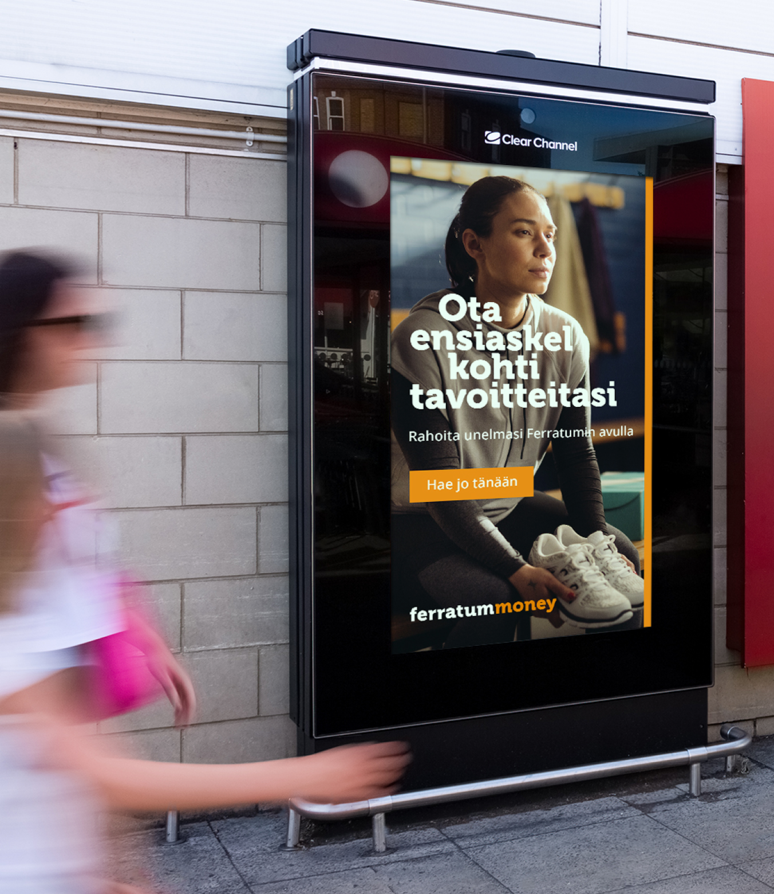
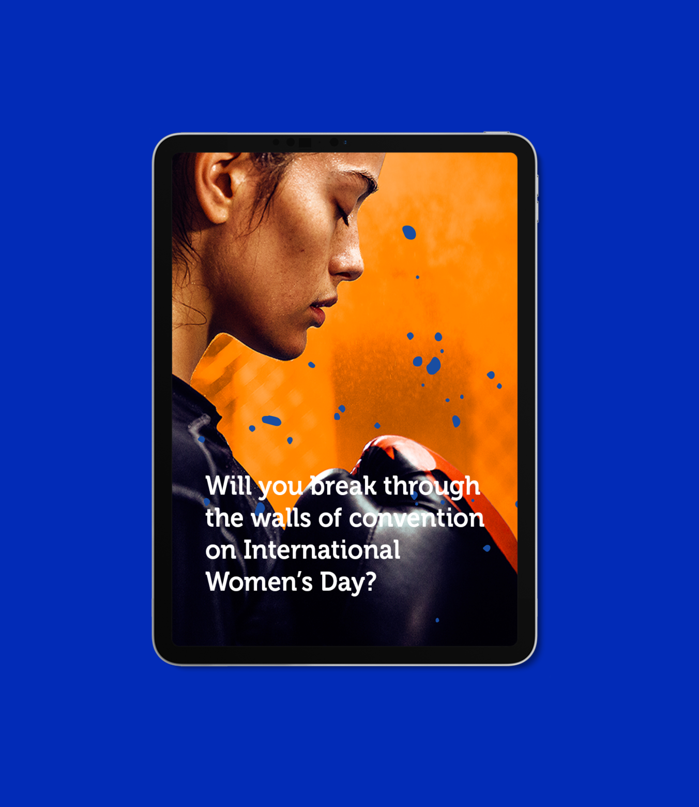
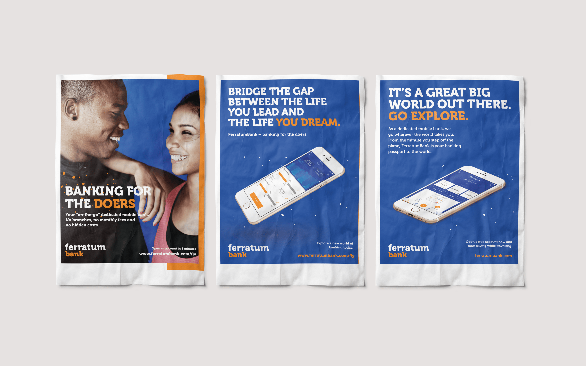
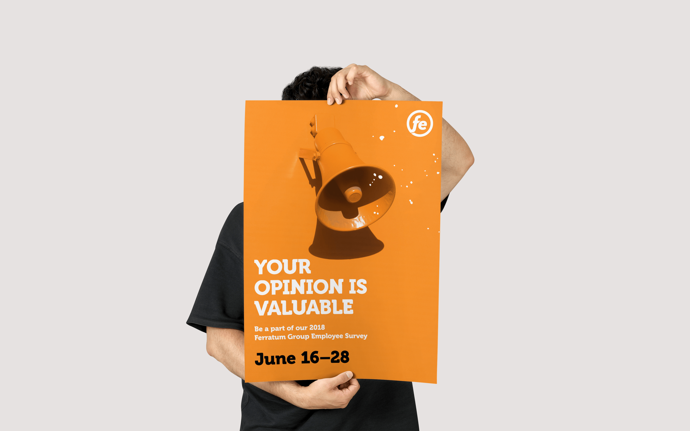
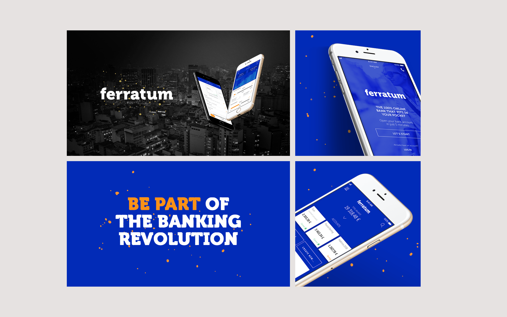
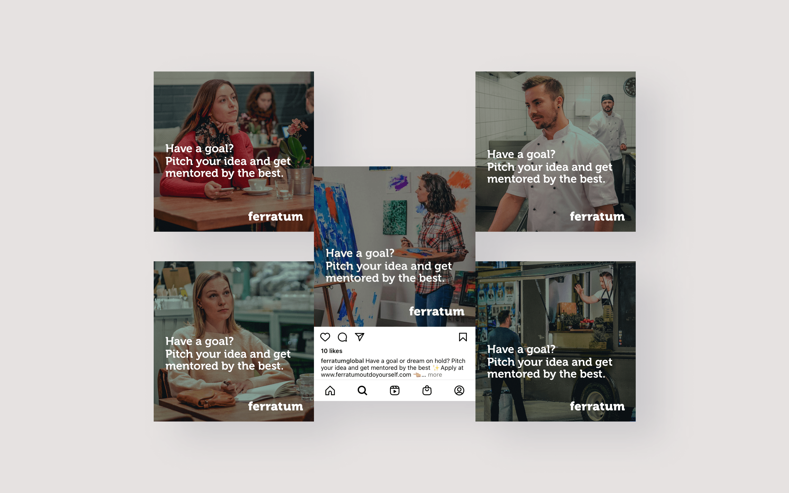
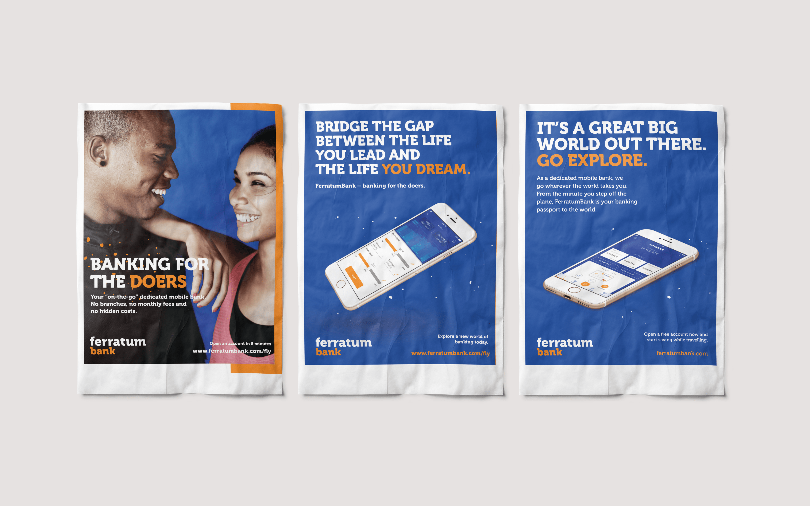
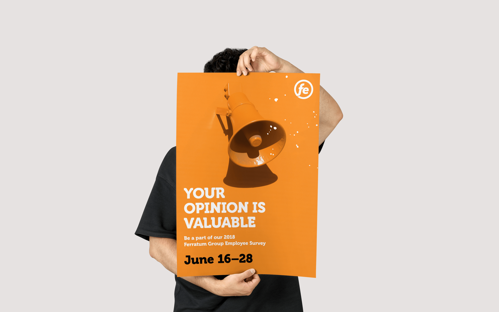
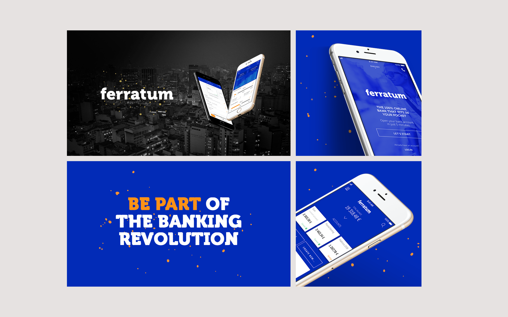
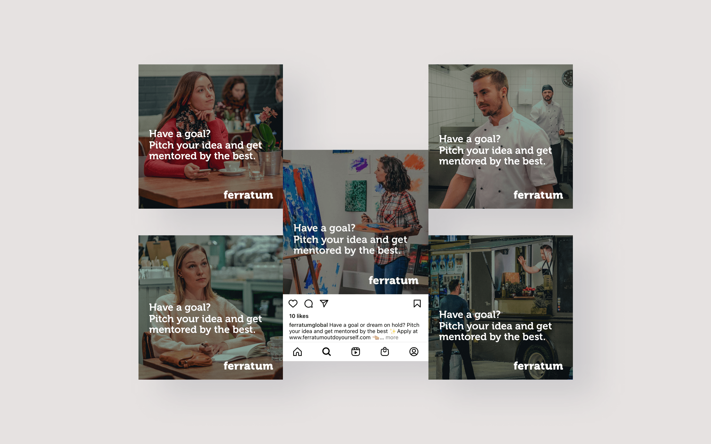

Ferratum
The Ferratum brand focuses on fulfilling small, short-term, unplanned financial needs of consumers. My role as a graphic designer, I worked on a variety of marketing materials such as social media graphics, online banners, billboards, magazine ads, surveys and infographics. I also designed user interfaces for web applications. Working with multiple local markets across Europe meant establishing one consistent design language across multiple cultural touch points was important. Here are some examples of projects.


 






